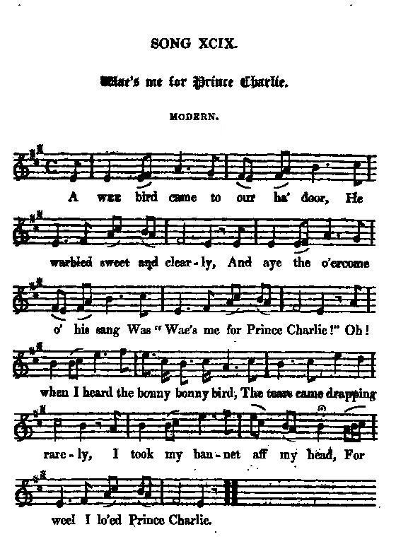
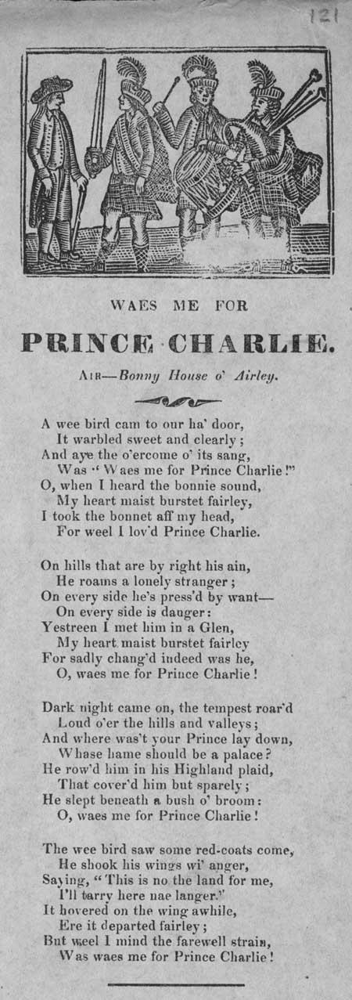

Wae's me for Prince Charlie
Le Prince Charles est bien à plaindre
Lyrics by William GLEN (circa 1820)
Tune - Mélodie"Gypsie Laddie"
from Hogg's "Jacobite Relics" 2nd Series N°99 page 192, 1821
Arrangement John GREIG (Victorian Time)
Sequenced by Christian Souchon
Variant
Sequenced by Ron CLARKE (see links)
Text contributed by Mr Paul ERNEST.
Alternative Tune
"The Bonnie House of Airly"
Sequenced by Christian Souchon

|
To the tune:
This tune is different from the air also titled “Wae’s me for Charlie” in Simon Fraser’s “Airs and Melodies Peculiar to the Highlands of Scotland and the Isles), 1815, No. 97, pg. 37, that was sung to Gaelic now lost lyrics by Alexander McDonald (Gaelic title: “Och a's ochan mo charadh ). ‘Lady Cassilis’ Lilt’ or “Johnnie Faa” is found in the MS Skene Mandora Book of c. 1620 , a collection of songs and dances (written in lute tablature) that is the oldest extent trustworthy authority for Scottish music - though it contains English tunes as well.- The name Faa, a variant of Faw, was the name of the leading gypsy family of old Scotland. Unfortunately for the Faa's, gypsies were periodically declared “personae non gratae” in that country and were formally expelled in 1609 and again in 1611. Though this meant they usually removed themselves to the hinterlands, four gypsies were hung in that latter year for the crime of having been found abiding in the realm. Things did not get better soon, for in 1624 Captain Johnnie Faa and seven others were hung for the same infraction. A popular ballad , "Johnnie Faa" usually tells the story of the elopement of the gypsy with one Lady Cassilis. There is some doubt as to the event's historical accuracy, but that even the earliest versions agree as to her name. The melody was popularized by an Italian named Francesco Barsanti (c. 1690 - 1772) in his “Old Scot Tunes” (1742 , pg. 6). He had probably notated the tune from folk tradition or perhaps learned it from his Scottish wife. The Scottish poet William Glen (1789-1826) used the tune as the vehicle for his song "Waes me for Prince Charlie" . This song was requested by Queen Victoria, during her 1842 visit to Taymouth Castle, as one of the songs to be included in a recital she attended by singer John Wilson, a celebrated interpreter of the time of Scots songs. Her selection was politically reparative, for Glen's lyrics relate the Jacobites' sorrow at the plight of Prince Charles Edward Stuart who became a fugitive from the English after being soundly defeated at the battle of Culloden one hundred years before. A broadside copy of the song (see picture below) mentions "Tune: 'The Bonnie House of Airly' ", (from John Finlay's "Scottish Ballads", 1808 and Gow's "Sixth collection of Strathspey Reels", 1822, page 14) Source "The Fiddler's Companion" (cf. Links). |
A propos de la mélodie:
Cette mélodie est différente de l'air également intitulé "Charlie est bien à plaindre" qui figure parmi les "Airs et mélodies des Highlands et des Hébrides" de Simon Fraser, 1815, No. 97, pg. 37, qui accompagnait un poème en gaélique aujourd'hui perdu d'Alexander McDonald: “Och a's ochan mo charadh ). "Lady Cassilis’ Lilt" or “Johnnie Faa” figure dans le manuscrit Skene "Livre de la Mandore" de 1620 environ , un recueil de chants et danses qui est le plus ancien document fiable d'une certaine longueur en matière de musique écossaise. Le nom de Faa (ou Faw) était celui d'une famille de chefs gitans de l'ancienne Ecosse. Le malheur voulut que les gitans du clan Faa soient périodiquement déclarés "personae non gratae" dans ce pays et expulsés en 1609 puis 1611. Bien qu'ils se soient habituellement spontanément retirés dans l'arrière-pays, quatre d'entre eux furent pendus, pour être restés dans le royaume. Les choses ne devaient pas s'arranger de sitôt: en 1624, le chef Johnnie Faa et sept de ses compagnons furent pendus pour le même motif. Une ballade populaire, "Johnnie Faa", raconte l'histoire de la fugue d'une certaine Lady Cassilis en compagnie de ce Gitan. On peut douter de la réalité de l'événement, mais il est de fait que même les versions les plus anciennes s'accordent sur le nom de la dame. La mélodie fut popularisée par un Italien du nom de Francesco Barsanti (C. 41690 - 1772) dans ses " Anciennes mélodies écossaises", 1742, page 6). Il a dû la recueillir dans la tradition orale ou l'a apprise de sa femme écossaise. Le poète écossais William Glen (1789 - 1826) utilisa la mélodie pour sa chanson "Le prince Charlie est bien à plaindre" . Ce chant fut ajouté par la Reine Victoria, lors de sa visite au château de Taymouth en 1842, au programme du récital donné par le chanteur John Wilson, célèbre interprète de chants écossais de l'époque. C'était là un acte politique de contrition, car les paroles de Glen expriment la douleur des Jacobites devant la détresse du Prince Charles réduit à l'état de fugitif, après la défaite de Culloden, moins de cent ans plus tôt. Sur une "broadside" (cf. illustration ci-après), il est indiqué pour ce chant, "sur l'air de 'The Bonnie House of Airly' ", (tiré des "Scottish Ballads" de John Finlay, 1808 et du "6ème recueil de Strathspey Reels" de Gow, 1822, page 14) Source "The Fiddler's Companion" (cf. Links). |

|
1. A wee bird cam' to our ha' door,
He warbled sweet and clearly, An' aye the o'ercome o' his sang Was "wae's me for Prince Charlie!" Oh, when I heard the bonnie, bonnie bird, The tears cam' drappin rarely, I took my bonnet aff my head, For weel I lo'ed Prince Charlie! 2. Quo' I, "My bird, my bonnie, bonnie bird, Is this a tale ye borrow? Or is't a song ye've learnt by rote, Or a lilt o' dool an' sorrow?" "Oh! No, no, no," the wee bird sang, "I've flown sin mornin' early. But sic a day o' wind and rain, Oh, wae's me for Prince Charlie!" 3. "On hills that are by right his ain, He roves a lanely stranger, On ilka side he's press'd by want, On ilka side by danger. Yestreen I met him in a glen, My heart near birsted fairly. For sadly changed indeed was he. Oh, wae's me for Prince Charlie!" 4. "Dark night cam' on, the tempest roar'd, Loud o'er the hills an' valleys. An' where was't that your Prince lay down, Whase hame should ha'e been a palace? He row'd him in a Highland plaid, Which cover'd him but sparely, An' slept beneath a bush o' broom, Oh, wae's me for Prince Charlie!" 5. But now the bird some Redcoats (1) spied, An' he shook his wings wi' anger. "Oh, this is no a land for me, I'll tarry here nae langer!" He hover'd on the wing a while Ere he departed fairly. But weel I'll mind the fairweel strain, 'Twas "Wae's me for Prince Charlie!" (1) English soldiers
William GLEN (1789 - 1826), Scottish poet, born in Glasgow, was for some years in the West Indies. He died in poverty. He wrote several poems, but the only one which has survived is his Jacobite ballad, Wae's me for Prince Charlie. (Source: answer.com).
John GREIG: Arranger and publisher of the collection "Scots Minstrelsie" in 6 volumes (1893).
|
 Broadside Ballad ( published ca 1860/90)
Illustrated with a woodcut of Jacobite soldiers, this ballad is dedicated to Charles Edward Stewart, 'Bonnie Prince Charlie' (1720-88), as he flees the redcoats following the Battle of Culloden. The writer imagines the indignities inflicted upon the would-be king, as he is forced to sleep among the heather of the Highlands, and contrasts his current abode with the palace in which he should be residing. The bird that appears in the ballad could be a symbol for Prince Charlie, since 'the king o'er the water' was often referred to as various types of bird by supportive writers and poets who wished to avoid being denounced as Jacobite sympathisers."
Source: National Library of Scotland
|
1. Devant ma porte un oiseau s'est posé,
Puis son doux chant s'est fait entendre, Et dans sa chanson l'oiselet disait "Charlie, le Prince est bien à plaindre!" Quand j'entendis ce doux, ce doux oiseau, Je versai bien des larmes. Alors j'ôtai vivement mon chapeau, En souvenir du Prince Charles! 2. Et je disais "O bel oiseau charmant, D'où te vient donc ta cantilène? As-tu par coeur appris ce triste chant, Ou clames-tu ta propre peine?" "Oh! non, oh, non," reprit le bel oiseau, "Volant depuis l'aurore, Dans le grand vent, parmi les trombes d'eau, C'est le Prince que je déplore!" 3. "Sur ces monts qui lui reviennent de droit, Il erre comme une âme en peine, La faim, le froid guettent en chaque endroit, Tout comme en chaque endroit la haine. Hier dans une vallée je l'aperçus, Ah quel navrant spectacle!, C'est à peine si je l'ai reconnu! Anéanti par la débacle!" 3. "L'orage, tandis que tombait la nuit, Sur les monts se faisait entendre. A terre gisait le bon Prince qui, A un palais pouvait prétendre! Enveloppé, mais couvert à moitié, Dans une houpelande, Savez-vous où votre Prince dormait? Sous les genêts, dessus la lande!" 4. L'oiseau battit des ailes en fureur. Quand vinrent de rouges tuniques.(1) "Je vais quitter cet endroit tout à l'heure," Car il me semble bien inique!" J'entends sa voix retentir dans les cieux, Puis au lointain s'éteindre. Dans mon coeur résonne son chant d'adieu, "Charlie le Prince est bien à plaindre!" (Trad. Ch.Souchon(c)2004) (1) Soldats anglais William GLEN (1789 - 1826), poète écossais, né à Glasgow, qui vécut quelques années aux Antilles anglaises. Il mourut dans le dénuement. Il écrivit plusieurs poèmes mais le seul que l'on connaisse encore est sa ballade Jacobite " Wae's me for Prince Charlie". (Source: answer.com) John GREIG: Arrangeur et éditeur du recueil "Scots Minstrelsie" en 6 volumes (1893). "Lady Cassiles Lilt", "Gypsie Laddie", etc...est une vieille ballade qui parle d'une grande dame qui s'enfuit avec un gitan. Les paroles correspondent à la version de la mélodie arrangée par Ron Clarke. |
"Wae's me for Prince Charlie" sung by Ewan McColl (1915-1989)